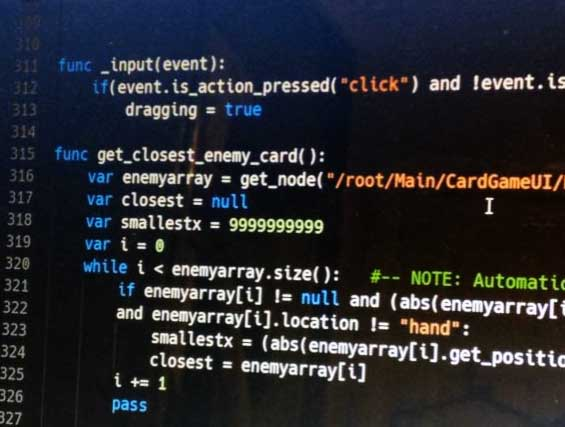
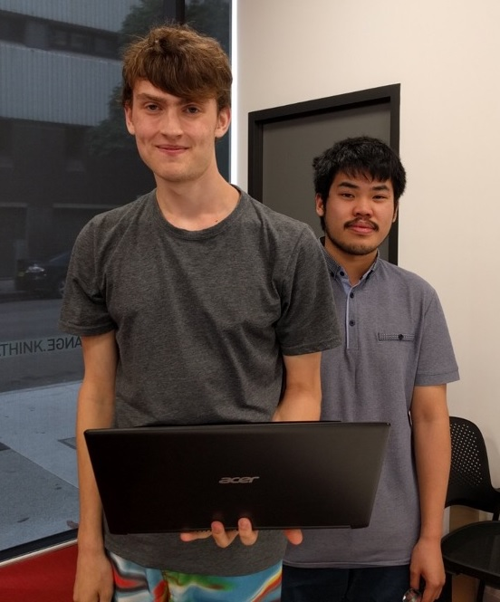

Learning journal
The following entries are an account of my learning experiences while taking Engineering Practice Preparation 1.
Week 1 - Workplace Learning
This week served as an introduction to the subject,
whilst also introducing us to the concept of workplace learning.
We were also asked to write a few paragraphs on
our understanding of engineering identity:
Engineering identity refers to an engineer or engineering student's perceived role, value, and agency
within the wider scope of their industry. Skill level, knowledge, and prior experience
heavily contribute to one's sense of belonging and identity as an engineer within their community of
practice; this sense in turn is associated with persistence and retention in academic programs and
the deepening of one's commitment to their career (Schell and Hughes, 2017).
The process of "becoming an engineer" is referred to as "legitimate peripheral participation",
which is made up of three primary activities: the mastery of disciplinary knowledge, the navigation of
formal and informal pathways
into the profession, and the identification by others and oneself as an engineer. With regards to myself,
my navigation of formal and informal pathways and identification as an engineer is quite limited due to
lack of formal prior experience, and I find it difficult to quantify my mastery of disciplinary knowledge
for similar reasons.
To develop my sense of engineering identity further, I will have to gain more formal experience in my field,
with increased exposure to professional software development environments. My sense of identity will also
likely
be furthered by conversing with established practitioners and applying relevant advice.

We were also asked to take a photo that represents what professional engineering practice means to us. I chose
this motorised face piggy bank
as it contains many different components that would have each required considerable amounts of thought to put
into, despite the bank itself
existing as a children's money saving mechanism at best and a cheap novelty at worst. To accept a coin, it
must open its mouth and swallow it; this
is achieved through a spinning motor attached to part of its "skin". To know when a coin is placed near its
mouth, it uses an always-on motion sensor.
To power it, it takes two AA batteries. Despite how simple this item seems on the surface, and how easy it is
to use, it still would have had to
go through the research, development, and manufacturing stages, as well as any stages in between. Thus, I feel
that this item is representative of how
engineers are required to put considerable amounts of thought and effort into things that an ordinary user of
the item would see as small and inconsequential,
and how even something as simple to the user as "put coin in mouth" require an understanding of many different
components to implement. Engineers have to
think about all the things that the users of a product don't, which is why I feel that this item is
representative of
professional engineering practice.
I also formally joined ProgSoc this week, a
UTS society of programmers that hosts events and helps connect members to the industry.
Week 2 - Feedback and Human, Social, and Cultural Capital
In week 2, we were introduced to the "sandwich" model of providing feedback, where criticisms are wrapped in
an
easy to digest shell of multigrain bread, as well as the concepts of human, social, and cultural capital.
Having been
born and raised in Australia, the same country I am looking for work in, the amount I will need to invest in
cultural
capital will be minimal compared to the amount I will need to invest into human and social capital. Currently,
the closest
thing I have to social capital would be my membership to ProgSoc and participation in hackathons and game
jams; thus, there
is plenty of room for improvement in this area in the future, but I believe that the skills associated with my
human capital
make up for it for the time being and would be significantly more important to a prospective employer. This
week, I attended
a meeting with a company in Sydney about a potential internship opportunity, and although I was intoduced to
the opportunity
through a neighbour, they were far more interested in technical skills, team skills, and work ethic compared
to what people
and organisations I was associated with.
I have found the learning in this subject to be different to subjects relevant to my field; it is far more
personal and more
about the development of the various soft skills that can be of use in a professional engineering environment.
Week 3 - Goals
This week, we had to fill out a table of SMART (Specific, Measurable, Achievable, Relevant, and Timely) goals.
| Specific | What do you want to learn? Who needs to be involved to accomplish these goals? |
|
|---|---|---|
| Measurable | How can you measure your progress? |
|
| Achievable | Do you have the needed skills? If not, how can you build them? |
|
| Relevant | Why should you achieve these goals? What is the impact? |
|
| Timely | What is the due date of your goals? |
|
Week 4 - Professional Assessment Activity 1 and Supervisors
This week, our peer feedback group completed Professional Assessment Activity 1. In this activity, we provided
feedback on each group member's
ePortfolio. The suggestions for my portfolio were to attend an industry event and take a photo, to add more
photos in general,
and to add more to my learning journal. Additionally, I was asked to expand on the About Me section of my
page, as well as provide a Job Analysis.
I aim to implement these suggestions over the coming weeks in preparation for Professional Assessment Activity
2, as well as for
final submission.
We also were asked to explain what we expect from the administrative, developmental, and supportive elements
of supervision. Personally, I expect
supervisors to ensure that we meet the required standards from the company and any associated laws, relating
to performance, quality, health, ethics, and safety.
As for my development, I expect supervisors to evaluate my current performance and suggest plans to improve,
as well as provide me with a clear plan as to what
level of performance I should strive for. I also expect supervisors to support me when it comes to easing into
new practices, frameworks, or hierarchies,
checking in on me every so often to see if I am meeting targets and providing advice or additional support
where necessary. Supervisors should make both my
rights and responsibilities clear with regards to the workplace environment and industry.
Surprisingly, these thoughts did not differ between members of my feedback group. We were also asked to
provide opinions on whether the following questions should
be asked from a supervisor:
- Their professional experience and theoretical orientation?
- Their supervision history and their approach to supervising?
- How they feel about being given feedback by supervisees?
- Whether they have supervision themselves?
- Whether they view supervision as a priority?
Personally, I feel like these questions would come off as intrusive and inappropriate for what an employee would be trying to get out of a supervisor-employee relationship; therefore, I would ask none of them. If their supervision were to be problematic, only then would I bring these sorts of questions up.
This week, I also applied to an offer on CareerHub, having to write a short cover letter and adjust my resume. Unfortunately, I was not accepted due to only being in my second year of studies; however, this experience further prepared me for the offers I would have to respond to in the future for my internship.
Week 5 - Critical Incident Journal and Occupational Health & Safety
This week, we had to write a critical incident journal entry recounting and analysing an occupational health
and safety issue
that we faced or witnessed as a student or in a job that we had. As my engineering field is software, the
amount of occupational health and safety
issues I am exposed to on a daily basis is limited, although I can think of one issue in particular related to
OHS that occurred during a hackathon.
In December 2017, I participated in the Ludum Dare 40, which gave me only 72 hours to program a functional
game. During development,
I failed to adhere to many health and safety recommendations related to working with computers, such as taking
frequent breaks and having my seat adjusted
appropriately. The lack of breaks not only harmed my productivity by not being able to have a clear mind to
fix bugs, but also took a strain on me physically,
severely impacting my sleep schedule and resulting in wrist, neck, and back pain. Thankfully I had time to
rest after the hackathon, but if this had happened
during a more demanding time, or if crunch periods like this became a more regular occurrence, it would have
serious impacts on my overall physical and mental
health. Thus, in future hackathons, as well as anything else requiring large amounts of work in small time
frames, I decided that it would be best to implement
some project management techniques to allocate my work more effectively, or at the very least use some sort of
pomodoro timer. This decision has not only improved
my overall productivity substantially, but has also heavily minimised the effects of burnout. Additionally, by
learning how to recognise the signs of burnout when
writing code (e.g. getting stuck in thought loops, dry eyes, neglecting food and water, reduced code quality)
I have been able to pace myself more appropriately
when working on a task. When working under similar circumstances as a group, I also ensure that breaks are
made a mandatory part of the development process for
all team members, and that no team members are pressured into completing work at a rate that would induce
burnout.

Pictured: The slowly deteriorating code quality of my Ludum Dare submission. At 4:30am, after many hours
of non-stop
programming, variable names start to become improperly separated and both the code and my brain start to
resemble spaghetti.
We were also asked to identify the Occupational Health and Safety Regulations pertinent to the industry we
want to enter.
The field of software engineering does not seem to have any specific OHS policies apart from the generic
policies of working in
an office environment. OHS regulations related to software engineering include the Work Health and Safety Act
2011 and the NSW Codes of Practice, and are regulated
by SafeWork NSW. The obligations for employers are to exercise due diligence and the primary duty of care, to
consult workers about their health and safety,
to keep a register of all injuries, and to provide appropriate support for any workers injured at work.
Employees, on the other hand, have the
responsibilities of working safely, following instructions, asking if they're not sure how to safely perform a
task, using personal protective equipment in a way that adheres to
how they were trained and instructed to use said personal protective equipment, as well as reporting any
injuries and unsafe or unhealthy situations to their supervisor or health
and safety representative.
We were also asked to find out what Safe Work Method Statements are, as well as the obligations of employers,
contractors, and employees in relation to them. From my research into the subject,
it appears to have no application in the field of software engineering, but rather fields involving some sort
of construction. A Safe Work Method Statement (not required for work of a minor nature)
is a document setting out any high risk construction work activities to be carried out at a workplace. It
includes the hazards arising from certain activities, as well as any measures that would be
put in place in order to control the risks. Employers must ensure a Safe Work Method Statement is prepared,
either by themselves or a third party, before any high risk construction work activities
are initiated. Contractors have the responsibility of consulting with each other to determine the individual
best positioned to prepare a Safe Work Method Statement, with health and safety representatives
and both employers and employees involved in the development of the document, with employees providing
relevant knowledge and experience to shape the document.
Week 6 - Professional Assessment Activity 2 and Industry Event
This week, I provided feedback on other people's e-portfolios, as well as receiving feedback on my own e-portfolio.
The key recommendations for my portfolio were to properly implement my section about attending an industry event, and
adding a job market analysis. It was also recommended that I split my journal entries into multiple pages somehow. I also
received some positive feedback, with members of my feedback group saying that my journals were "reflective and in-depth",
that I included a lot of relevant personal experience, and that I was responding to the tutorial topics appropriately.
With regards to both me and the rest of my feedback group, not much changed between Week 4 and Week 6, aside from
some new journal entries; however, I plan to add much more between now and final submission.
I will use this week's journal entry to discuss an industry event I recently attended, the inaugural UTS FEIT Student Game
Jam, which was a video game development hackathon that took place over approximately 24 hours. Although the games development
industry is quite small in Australia, this was still an extremely valuable experience for me, as I got to do pair programming
for the first time and learnt a lot about user interface design and user experience design, as well as some other topics
that have yet to be covered as substantially by my course. My other team member came from a more computer science oriented background,
and was thus able to teach me a lot about arrays, data structures, and other lower-level concepts, which were of significant help
for both the project we worked on as well as any software projects I will have in the future that deal with lower-level concepts. I was also
able to have discussions with people with experience in either the games or general software engineering industry, as well as students in much later
years than myself, which would have been good in terms of networking. We did surprisingly well for a two-person team in such a small amount of time, and I got to learn a lot about project management from both my team and observing
how other, more successful teams operated. This was also the first local game jam or hackathon that I have attended, as well as the shortest
one, which gave me a whole new perspective on handling deadlines. Although I consider my entries in other game jams/hackathons to be
of a much higher quality, due to the more generous amount of time I was given, the results of what I worked on would act as direct, physical evidence of
my ability to work under intense deadlines, programming ability, and creativity. Additionally, this event has made me more confident to attend future industry
events, and ended up connecting me to a community of students and other entities in the software engineering industry that I would have not known existed otherwise. Thus,
I believe that I will be able to leverage this experience to develop my connection with the engineering industry in Sydney.

Pictured: My team mate and I after way too many hours of drawing up graphics and writing code on a laptop without a dedicated mouse.
Week 7 - Summative Journal Entry
Overall, I strongly believe that I have adhered to and achieved the relevant Subject Learning Outcomes for this subject. Upon successful completion of this subject, we are expected to articulate our preparedness for participating in an engineering workplace, and document and communicate our capabilities to contribute to a workplace and engage in workplace learning. I believe that I have successfully articulated my preparedness for participating in an engineering workplace through my critical incident journalling, job market analysis, and affirming my knowledge of software engineering practices and principles, and I believe that I have successfully documented and communicated my capabilities to contribute to a workplace and engage in workplace learning through my introspective journal entries and demonstrable commitment to learning. Setting clear short term and long term goals for my software engineering career has also given me things that are tangible and that I can work towards, furthering both my perceived sense of engineering identity, as well as my hard and soft skills as a software engineer. Thus, I believe that I have fulfilled the Subject Learning Outcomes for this subject with at least a moderate degree of success.